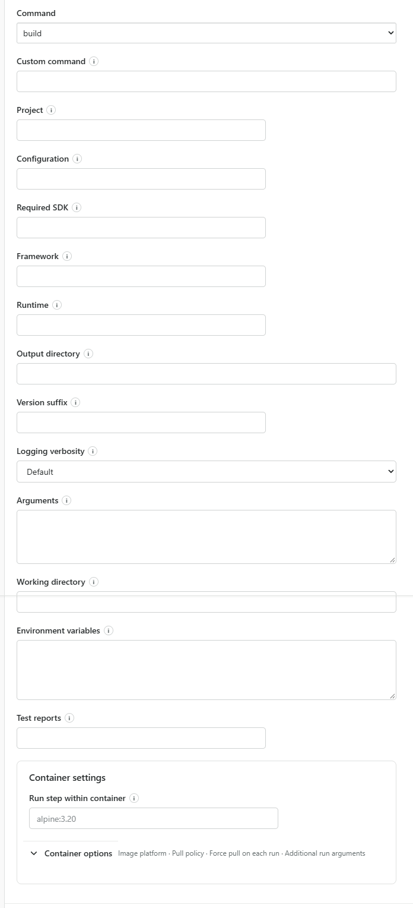

.NET
Runs the dotnet command: build, test, publish, restore, run or your own command.
When to use it
Use it to build and test C# projects with the .NET SDK, such as your game's tools, a launcher or a Unity package with tests. For a Visual Studio .sln that needs full MSBuild, see MSBuild.
How to set it up
- Open the build configuration and click Settings › Build Steps.
- Click Add build step. Type
.NETin Filter step types if you like, then click the .NET tile (group Build tools). - Type a Step name, for example
Test tools. - Fill in the fields described below.
- Optional: set Execute step, Conditions and Retry on failure. See The steps list and the step editor.
- Click Save.

Every field
| Field | What it does | Default | Example |
|---|---|---|---|
| Command | build, test (results recorded), publish, restore, run or Custom command. | build | test |
| Custom command | Used with Custom command only: the word after dotnet, such as format or tool. | Empty | format |
| Project | A project, solution or file. Empty lets dotnet look in the working directory. For run it follows --project. | Empty | Tools/BuildTools.sln |
| Configuration | Passed as -c to build, test, publish and run. | Empty | Release |
| Required SDK | The .NET SDK the agent must have, such as 8.0 (any 8.0.x) or 8.0.100. The build configuration waits for an agent that listed it. Not passed to dotnet. | Empty | 8.0 |
| Framework | The target framework, passed as -f to build, test, publish and run. | Empty | net8.0 |
| Runtime | The runtime identifier, passed as -r to build, test, publish, restore and run. | Empty | win-x64 |
| Output directory | Passed as -o to build, test and publish. | Empty | out/tools |
| Version suffix | Passed as --version-suffix to build and publish. | Empty | rc.%build.number% |
| Logging verbosity | Passed as -v to every command except a custom one: quiet, minimal, normal, detailed, diagnostic. | Default | minimal |
| Arguments | One argument per line. Each line stays one argument, whatever it holds. Pass a secret through the environment. | Empty | --no-restore |
| Working directory, Environment variables, Test reports, Run step within container | The same in every runner. See Fields every runner has. |
A worked example
Run the unit tests of the build tools. Step name Test tools, Command = test (results recorded), Project Tools/BuildTools.sln, Configuration Release, Required SDK 8.0.
What you see when it runs
The console shows $ dotnet test Tools/BuildTools.sln -c Release and the test output. The results of dotnet test are recorded: the build gets a Tests tab, and a failed test makes the step unstable.
Problems and fixes
| Problem | What to do |
|---|---|
| The dotnet command was not found on this agent | Install the .NET SDK there or put dotnet on the PATH. |
| The .NET step has no custom command | Fill in Custom command. |
| … logging verbosity that dotnet does not know | Use quiet, minimal, normal, detailed or diagnostic. |
| The value for … must not start with a dash | Remove the leading dash from that field. |